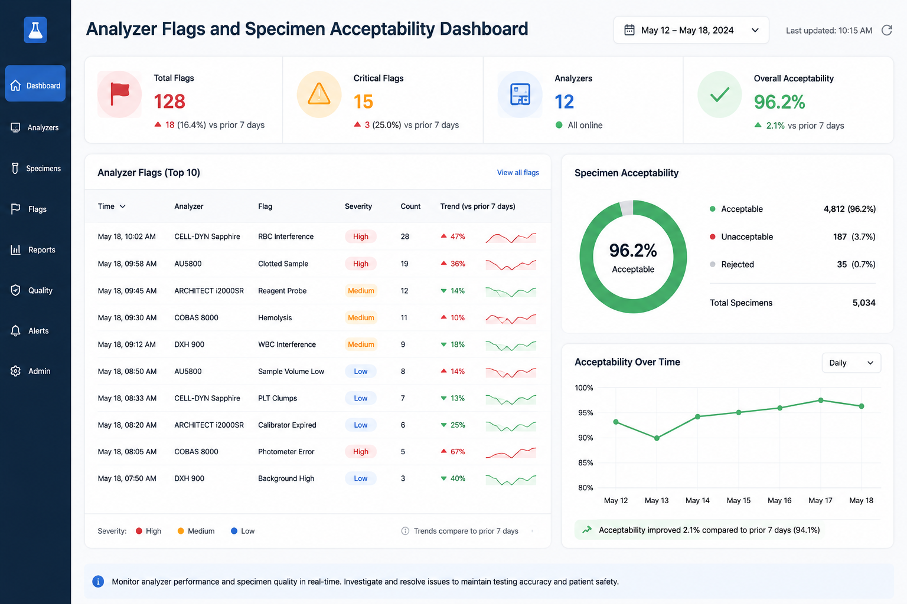
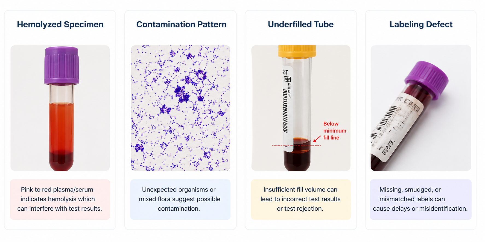

Detect
Core Educational Content
Laboratory mitigation converts specimen defects into controlled decisions
Analyzer and instrument safeguards
Real-time alarms may identify reagent depletion, mechanical failure, sample aspiration problems, clot detection, short sample, or results outside reportable limits.
Specimen-quality alerts
Hemolysis, icterus, lipemia, insufficient sample volume, clot flags, and tube acceptability checks can stop unreliable results before release.
Human review and intervention
Staff review flags, compare prior results, inspect specimens, call units, request recollection, and document the reason a result is suppressed or qualified.
Quality audits and root cause analysis
Alarm logs and rejection patterns can reveal recurring collection issues, training gaps, unit-specific problems, or process failures.
New Source Material
Performance monitoring extends mitigation into the analytical phase
The laboratory systems that keep instruments and assays trustworthy: equipment maintenance, calibration, quality control, proficiency testing, standard operating procedures, staff competency, and instrument-to-instrument comparisons.
QC1
QC2
Calibrator or maintenance changes should be visible in QC review before patient results are affected.
Equipment maintenance and calibration
Routine daily maintenance keeps the analyzer ready for use. Major maintenance, often every 6 months or yearly, requires verification before routine release of patient results.
Quality control testing
QC is generally run 2 to 3 times per day for each assay and after defined events such as calibration, reagent changes, troubleshooting, or maintenance.
Proficiency testing
Regulatory or accrediting groups distribute unknown material, commonly three times per year, so laboratories can compare performance with peer laboratories.
SOPs, training, and comparison studies
Standard operating procedures, training, competency assessment, and instrument-to-instrument comparisons convert individual checks into a durable quality system.
Source Deck Focus
Instrument alarms and flags are part of prevention in real time
The PowerPoint emphasizes alarms, error messages, preanalytical and analytical alerts, prompt staff troubleshooting, documentation, quality audits, regulatory support, and continuous improvement.

| Issue | Common laboratory signal | Immediate mitigation | Prevention opportunity |
|---|---|---|---|
| In vitro hemolysis | Hemolysis index, visual inspection, implausible potassium or LDH pattern | Suppress affected analytes, request redraw, add interpretive comment when allowed | Review collection technique, transport, needle size, mixing, pneumatic tube handling |
| Contamination | EDTA pattern, heparin effect, line dilution, unexpected delta mismatch | Hold results, investigate collection source, recollect from clean venipuncture | Educate on order of draw, discard volumes, and line draw procedures |
| Inappropriate filling | Short sample, insufficient volume, citrate fill error, clot or aspiration flag | Reject or recollect if validated acceptability criteria are not met | Monitor rejection rates by location and reinforce tube filling requirements |
| Labeling issue | Missing identifiers, mismatch, duplicate accession, unlabeled specimen | Do not release patient results from uncertain identity specimens | Audit ID workflow, bedside labeling, electronic collection, and handoff steps |
